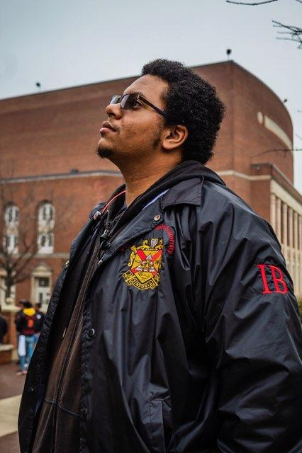

I am a senior double majoring in Electrical Engineering as well as Computer Engineering with a Minor in Applied Mathematics. I am originally from Suffolk Virginia. My passion is Robotics as well as robotics engineering. I enjoy using different microcontrollers as well as single board computers.
| Course Name | Course Department and Number | Course Time |
|---|---|---|
| Internet Systems | COMP 322 | MWF 9am - 9:50am |
| Embedded Systems Design | ECEN 421 | MWF 10am - 10:50am |
| Introduction to Communication Systems | ECEN 449 | MWF 11am - 11:50am |
| Advanced Digital Systems | ECEN 424 | MWF 2pm - 2:50pm |
| Digital Systems Design Lab | ECEN 329 | Th 2pm - 3:50pm |